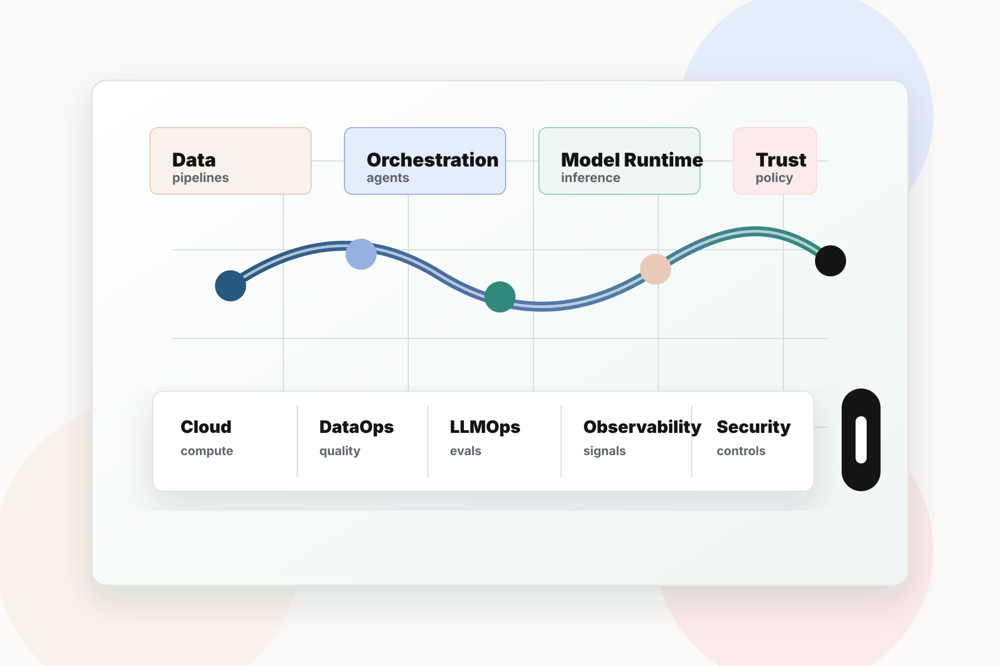

SaaS founders & CTOs
Teams building AI-native products that need reliable infrastructure, cost control, and deployment patterns.


Founder-led AI-native infrastructure intelligence
INVENEW helps SaaS builders, cloud leaders, AI vendors, and enterprise technology teams understand, build, and scale the next generation of intelligent software systems.

Fast, technically credible signal on AI-native infrastructure and AI-SaaS operations, built by an operator who has lived the stack.
Who INVENEW serves
Teams building AI-native products that need reliable infrastructure, cost control, and deployment patterns.
Operators responsible for production systems, observability, security, data readiness, and AI-SaaS lifecycle decisions.
Companies selling tools for agents, LLMOps, inference, observability, cloud, security, data, and developer platforms.
Leaders moving from experiments to governed, secure, measurable, production-grade AI adoption.
Problem solved
INVENEW turns AI-native infrastructure complexity into practical executive signal: what changed, why it matters, what to build, what to buy, and which risks deserve attention.
Built on deep operating experience and existing technical distribution.
Flagship Coverage
Production use cases, workflow redesign, reliability, and operating models.
Security, compliance, model risk, policy, auditability, and responsible AI.
Data platforms, cloud, observability, orchestration, cost, and AI operations.
Business cases, vendor selection, benchmarks, adoption patterns, and value capture.
Core business
Weekly briefing, daily LinkedIn insights, blog analysis, buyer guides, and practical AI-native infrastructure signal.
02Experiments, prototypes, vendor maps, maturity assessments, benchmarks, and architecture pattern libraries.
03Newsletter placements, LinkedIn campaigns, sponsored reports, webinars, vendor spotlights, and partner campaigns.
Differentiation
Built from real cloud operations and SaaS infrastructure experience, not detached analyst theater.
Combines disciplines most publications cover separately.
Research is grounded in prototypes, tests, and practical build notes.
LinkedIn audience, technical groups, and newsletter reach create a direct channel to buyers and builders.
Technical enough for builders, clear enough for leaders making budget and platform decisions.
Start Here